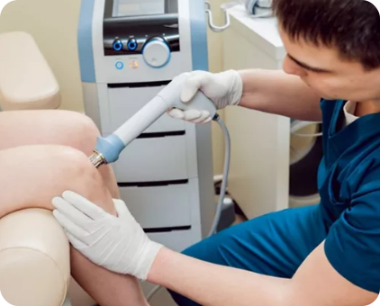

Terapia por
Ondas de Choque
A Terapia por Ondas de Choque (TOC) é uma onda Acústica que transporta alta
energia para a região tratada.
A energia gerada promove reparo em ossos (Fraturas – PseudoArtrose),
regeneração tecidual e diminuição do processo inflamatório em TENDINITES,
BURSITES, FASCITE PLANTAR/ESPORÃO, EPICONDILITES e etc.
Utilizamos na Urologia e Andrologia para tratamento de DISFUNÇÃO ERÉTIL e
DOENÇA DE PEYRONIE, melhorando a qualidade de vida do paciente.
“Com todo o estresse do trabalho, da rotina, não tem tempo de tratar a sua dor, cansado de realizador
outros tratamentos sem melhora !? Nós temos uma solução para você!”
